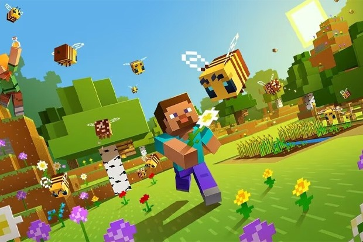

The original Minecraft game, known for its sandbox gameplay, places players in a vast, open world where they can mine resources, craft tools, and build structures in a blocky, pixelated universe. It prioritizes creative freedom and survival elements, allowing players to shape their own experiences. On the other hand, spinoff games like "Minecraft: Story Mode" and "Minecraft: Dungeons" offer distinct gameplay experiences. "Story Mode" focuses on narrative-driven, episodic adventures with a predefined storyline, where players make choices that impact the outcome. Meanwhile, "Minecraft: Dungeons" is an action-adventure game that delves into combat and dungeon crawling, featuring RPG elements like character progression and gear upgrades. While the original Minecraft thrives on its open-ended creativity, these spinoffs offer more structured and goal-oriented gameplay experiences, catering to a wider range of gaming preferences within the Minecraft universe.

In Minecraft, players mine resources, craft items, and construct structures in two main modes: Survival and Creative. Survival involves survival challenges, combat, and resource management, while Creative offers unlimited resources for freeform building. The game also supports multiplayer and exploration of dungeons, offering a wide range of experiences within its blocky, open world.